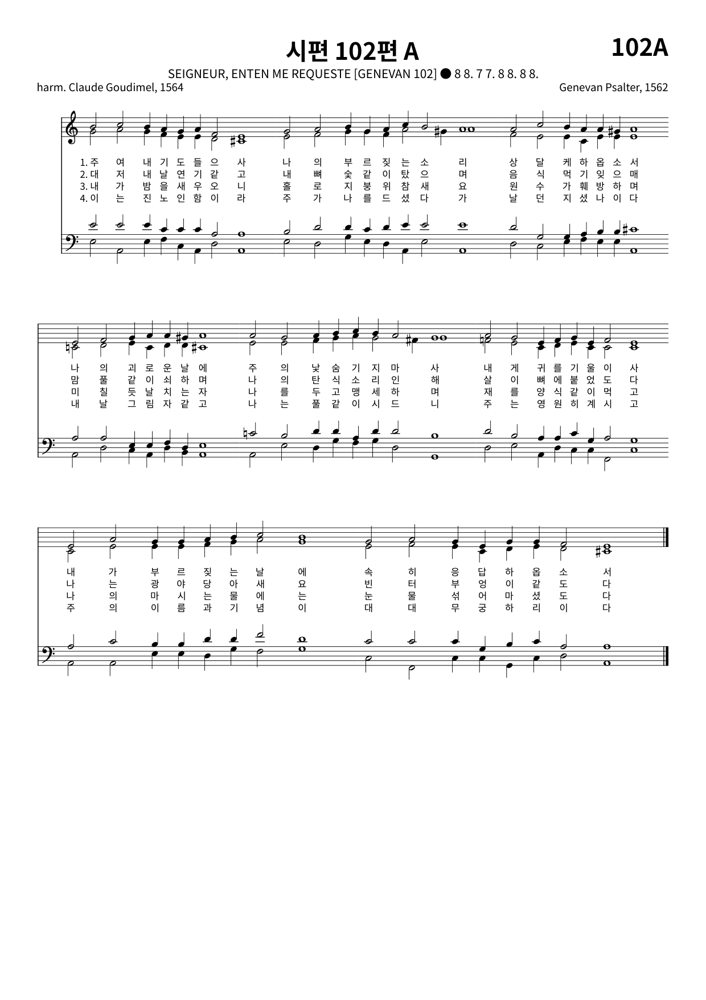

Psalm 102A
SEIGNEUR, ENTEN ME REQUESTE [GENEVAN 102] · 8 8. 7 7. 8 8. 8 8.
English title: Heed My Prayer, O LORD, Be Near Me
Tune: Genevan Psalter, 1562 · Harmony: Claude Goudimel, 1564 · Lyrics: Korean adaptation of Psalm 102 from the Korean Revised Version (AI draft adaptation · not yet theologically reviewed) · 4 stanzas
Psalm 102 is divided into 2 tunes: A B · This tune contains stanzas 1–4 of the Psalm 102 lyrics.
Score PDF MusicXML (for printing) MusicXML (for accompaniment, with prelude and repeats) Read Psalm 102 (Korean Revised Version)
Score
← Psalm 101 ListAccompaniment (in preparation)Psalm 102B →
Lyrics (Korean)
Stanza 1
주여 내 기도 들으사
나의 부르짖는 소리
상달케 하옵소서
나의 괴로운 날에
주의 낯 숨기지 마사
내게 귀를 기울이사
내가 부르짖는 날에
속히 응답하옵소서
주여 내 기도 들으사
나의 부르짖는 소리
상달케 하옵소서
나의 괴로운 날에
주의 낯 숨기지 마사
내게 귀를 기울이사
내가 부르짖는 날에
속히 응답하옵소서
Stanza 2
대저 내 날 연기 같고
내 뼈 숯같이 탔으며
음식 먹기 잊으매
맘 풀같이 쇠하며
나의 탄식 소리 인해
살이 뼈에 붙었도다
나는 광야 당아새요
빈 터 부엉이 같도다
대저 내 날 연기 같고
내 뼈 숯같이 탔으며
음식 먹기 잊으매
맘 풀같이 쇠하며
나의 탄식 소리 인해
살이 뼈에 붙었도다
나는 광야 당아새요
빈 터 부엉이 같도다
Stanza 3
내가 밤을 새우오니
홀로 지붕 위 참새요
원수가 훼방하며
미칠 듯 날치는 자
나를 두고 맹세하며
재를 양식 같이 먹고
나의 마시는 물에는
눈물 섞어 마셨도다
내가 밤을 새우오니
홀로 지붕 위 참새요
원수가 훼방하며
미칠 듯 날치는 자
나를 두고 맹세하며
재를 양식 같이 먹고
나의 마시는 물에는
눈물 섞어 마셨도다
Stanza 4
이는 진노 인함이라
주가 나를 드셨다가
날 던지셨나이다
내 날 그림자 같고
나는 풀 같이 시드니
주는 영원히 계시고
주의 이름과 기념이
대대 무궁하리이다
이는 진노 인함이라
주가 나를 드셨다가
날 던지셨나이다
내 날 그림자 같고
나는 풀 같이 시드니
주는 영원히 계시고
주의 이름과 기념이
대대 무궁하리이다